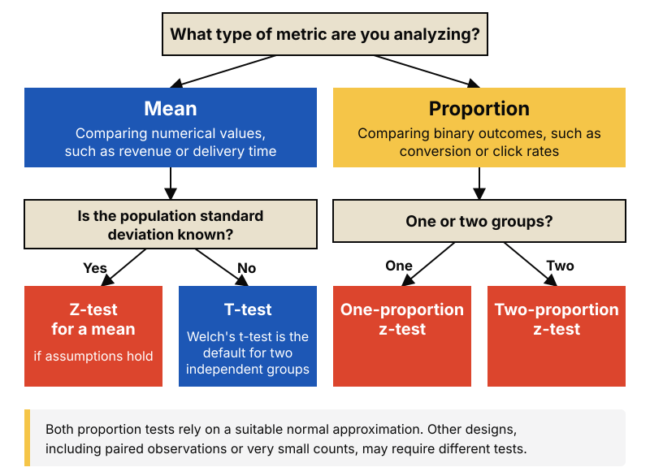

Inference & experiments
T-Test vs. Z-Test
You have two versions of something and a number for each. Before you can say one is better, you need a statistical test, and the two most common are the t-test and the z-test. This post shows how to choose between them by starting from the business question and not from the formulas. It builds on A/B Testing.
Start with the business question
Every statistical test starts with what you want to compare. In business analytics, it is usually one of two things:
- An average, such as average order value or revenue per user.
- A proportion, such as conversion rate or click rate.
The distinction matters because averages and proportions describe different types of data and require different statistical approaches.
A mean summarizes numerical values that vary from user to user, such as the amount spent on each order. A proportion summarizes a binary outcome, such as whether a visitor makes a purchase.
For a proportion, variability depends on the proportion itself and the sample size. This allows us to estimate its standard error directly from the data, without separately estimating a population standard deviation as we typically do when testing means.
The next question is whether the population standard deviation — the true spread of values across the population — is known.
In practice, it is usually unknown, so we estimate it from the sample. This introduces additional uncertainty, which the t-distribution accounts for through its heavier tails, particularly with small samples. As the degrees of freedom increase, the t-distribution approaches the standard normal distribution, and the difference between the two becomes negligible.
These distinctions give us a practical starting point for choosing the right statistical test.
Build a decision tree
You do not need to memorize disconnected rules. Two questions are enough: what are you comparing, and is the standard deviation known?

When you compare the averages of two independent groups, use Welch's t-test. It does not assume that both groups have the same spread, which makes it the safe default.
Apply it to business analytics
Average revenue between two campaigns
Campaign A reached 1,000 customers with an average revenue of €52 and a standard deviation of €30. Campaign B reached 1,000 customers with an average revenue of €56 and a standard deviation of €32. The metric is an average and the spread is estimated from the samples, so use Welch's t-test. The result is t = 2.88 and p ≈ 0.004, so the €4 difference is unlikely to be chance.
Conversion rate between two website versions
Version A converted 1,000 of 20,000 visitors (5.0%). Version B converted 1,120 of 20,000 (5.6%). The metric is a share, so use a two-proportion z-test. The result is z = 2.68 and p ≈ 0.007, so the 0.6-point lift is unlikely to be chance.
The numbers in both examples are illustrative.
How to explain it to stakeholders
“Campaign B generated €4 more revenue per customer on average than Campaign A. The difference is statistically significant (p ≈ 0.004), which provides evidence that the campaigns differ in average revenue. The next question is whether the additional revenue justifies the extra campaign cost.”
Key takeaway
The business question decides the test. Averages usually need a t-test, because you estimate the spread from your data. Shares use a z-test. With large samples the two give almost the same answer.